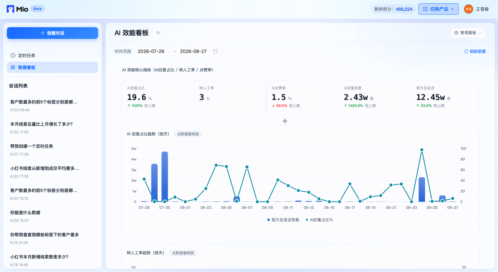
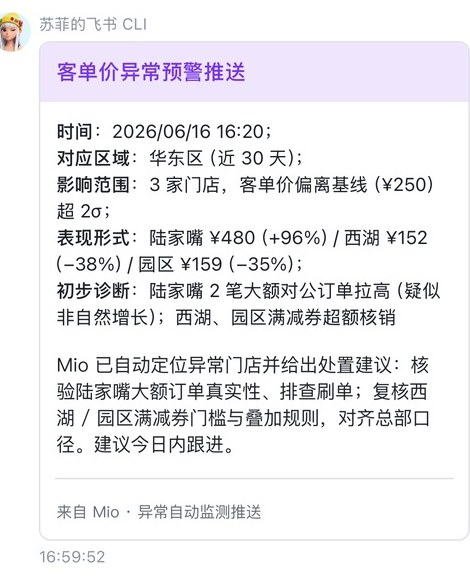
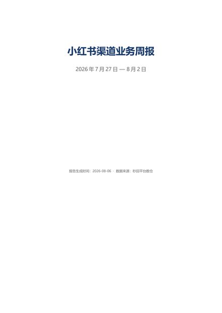
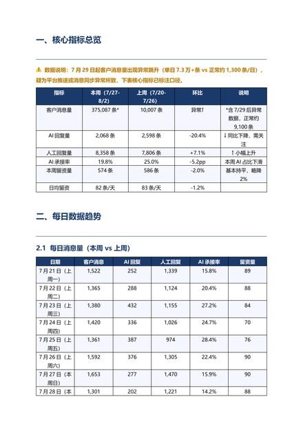
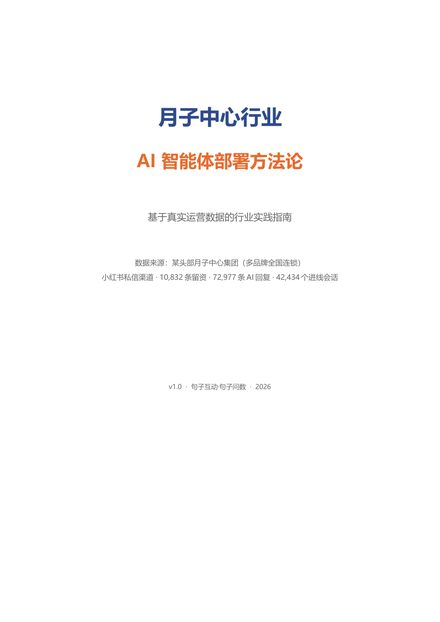
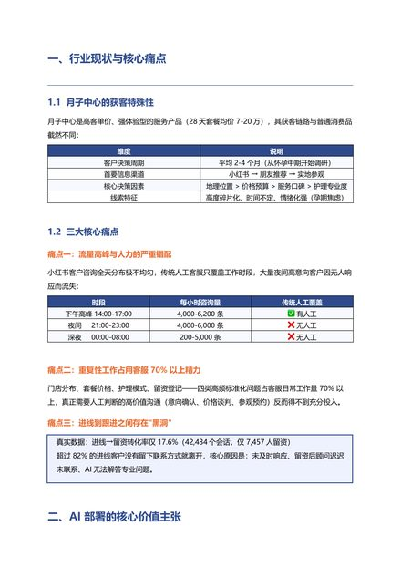
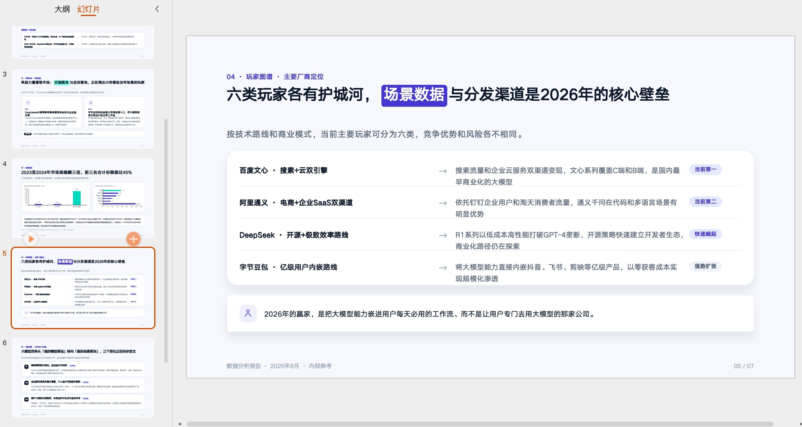
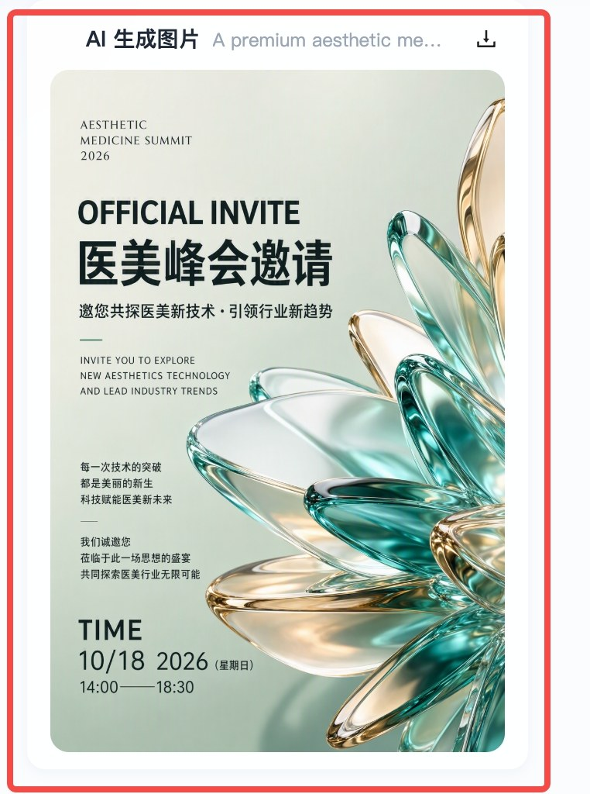

员工自己用的 AI，帮不到企业。
员工已经离不开 AI。企业不配，他们就用自己的。不是 AI 不好用，是「个人随便用」这个用法有三个洞。
只出主意，不出活
问答式 AI 给你一段文字、一堆建议。粘贴、排版、核对、改格式，活还是自己干。
各用各的，攒不下
你用这家我用那家，写出来风格各一套。好用法留在个人手里，人走就带走了。
敏感材料上了外网
公司材料喂给外部 AI 工具，数据去哪没人知道。谁在用、用了多少、用来干什么，企业一概不掌握。
AI 助手给答案，Mio 交成果。
不止于问答：听得懂任务，自己拆步骤、动手干，交回能直接验收的成果。
替每个员工干的七件事。
前四件对齐市面上最好的办公 AI。后三件是企业用得最重的活：问数、看板和盯指标，接着企业的数才干得了。
写方案、出文档
周报、总结、方案、通知，说清要什么就动笔，排好格式交回。
做 PPT、做海报
汇报 PPT、分析报告、活动海报，图表排版配好，直接能用。
处理数据、出分析
表格清洗、汇总、对比分析，表和图一起交。
查资料、做调研
要查的它自己去搜、去核，整理成能用的材料。
问企业自己的数
- 一句话问经营数据，秒级出图表
- 一层层追着问到底，答案带出处
- 查得到数据库里的原始数
搭数据看板
- 想盯的指标，一句话搭成看板
- 指标卡加分天趋势，随时刷新
- 时间范围自己选，明细点得进去
主动盯、定时干
- 指标异动它先发现先提醒
- 日报周报到点自己来
- 盯出来的问题，追进去就能查
打开 Mio，长这样。
新版首页、数据看板与手机预警。界面为真实产品，数据均为演示数据。不用培训，会说话就会用。
首页 · 写、做、查、盯，全在一个对话框里。

数据看板 · 指标卡加趋势，明细点得进去。

手机上 · 异常主动来找你。
交回来的活，长这样。
真实交付的 Word 文档、PPT 与海报。排好版、带数据、直接能转发。客户与品牌信息已隐去，内容均为示例。






一分钟，看它干完一件活。
布置一件任务，看它自己拆步骤、查数据、出图表，全程不用人盯。
别听我们说，你问一句，当场出图。
下面的图表全部由浏览器现画。点一个问题，看它怎么取数、出图、给结论。用的是演示用示例数据，不是真实客户实时数据。
每人一个坐席，全公司一个大脑。
模型一代比一代聪明，可每次打开对话，它都像上班第一天：不认识你的客户，不知道你的规矩。缺的是经验，经验只能在活里攒。
工龄，每天都在涨
用一年，它就是个有一年工龄的员工。
- 说过的话，不用再交代：定过的口径、改过的格式，下次开口直接带上
- 出过的错，不会再犯：出错的对话自动变成测试用例，修好才放行新版本
- 干过的活，都有底：怎么来的、人改了什么都记着，改第二版不用从头讲
- 这些都发生在深夜：统计、调优、回归自动跑完，你睡觉的时候，它在变好
好做法回流，攒成公司的大脑
谁把一件活干顺了，他的做法就沉淀成公司的流程：别人一句话调用，天天跑、跑错了能发现。
- 新人第一天就有老手的做法：不用师傅带三个月，开箱就是全公司最好的用法
- 别的部门拿来就用：销售调顺的周报做法，运营、客服一句话就用上
- 越用越像你们公司的人：攒下的做法越多，换谁来用都是这个水准
不是聊天框，是一个干活的过程。
布置下去之后，中间每一步它自己跑，你看得见、随时叫停。
听懂任务
一句话布置。不用学指令，不用写提示词。
自己拆步骤
把活拆成步骤，列出来给你看，先干什么后干什么。
动手执行
查数、检索、写作、制表、画图，一步步自己干。
交回成果
文档、PPT、表格，能下载能转发。不满意，一句话让它改。
市面上有两类，Mio 是第三类。
个人 AI 助手把个人伺候得好；大厂标品坐席把人管得住；Mio 还要把活干深。管得住是入场券，干得深才是给员工配 AI 的意义。
个人 AI 助手
- 写得快、画得好，员工自己就在用
- 答的是通用答案，不认识你的客户和订单
- 好用法散在个人手里，材料还往外网跑
大厂标品 AI 坐席
- 统一开通、后台管控，企业级的壳有了
- 标品不深入业务：答案停在表面，深究不下去
- 流程沉淀不下来；要定制，得另找实施伙伴
Mio
- 接着企业经营数据作答，带出处、能深究
- 干顺的活沉淀成全公司天天跑的流程
- 定制和接系统由自带的交付团队干，对结果负责
企业敢全员配，靠这六条。
给员工配 AI，企业先问的不是聪不聪明，是可不可控。1000+ 企业验收过的同一套企业级底子，Mio 生来就有。
统一开通，用量看得见
坐席由企业统一开通；谁在用、用了多少，后台一目了然。
数据不出企业的域
支持私有化、一体机部署；员工问的写的，留在自己域里。
每一次产出可追溯
答案来自哪些数据、怎么来的，全程可审计。金融、政务按这条验收。
在隔离环境里干活
动作可控、可回滚，碰不到不该碰的系统。
用真实工位身份上岗
账号、权限、行为记录，和员工同一套体系管理。
模型不绑定
100+ 国内外主流模型一键切换；按任务选模型，不被绑死。
从办公坐席开始，能长成一套 AI 员工体系。
今天解决员工的写、查、盯；企业要往深走，同一套底子接得住。先给员工配上，用出感觉了再往深走，不用换平台。
员工先用起来
写方案、做 PPT、查资料，不接任何系统也好用，全员当天上手。
接上经营数据
把业务系统接进来，它答的就是你真实的生意；企业自己的做法一点点沉淀成它的本事。
算得清，开得快。
按坐席开通，按用量计费，像配工位一样给员工配 AI。这个价不靠补贴：自研引擎把模型成本压下来，账算得过来才供得长久。
一个坐席对应一名员工，人员变动可换绑。
用多少算多少，后台用量和明细看得清。
当场试
拿你手头的活现场布置一件，眼见为实，再谈别的。
小范围试点
先给一个部门开坐席，跑一个月，看看大家离不离得开。
全员开通
批量开坐席、接业务系统，让每个员工都配上。
给每个员工，配一个
能把活干完的 AI。
Mio，企业统一开通的 AI 办公坐席。当场拿你手头的活布置一件，眼见为实。